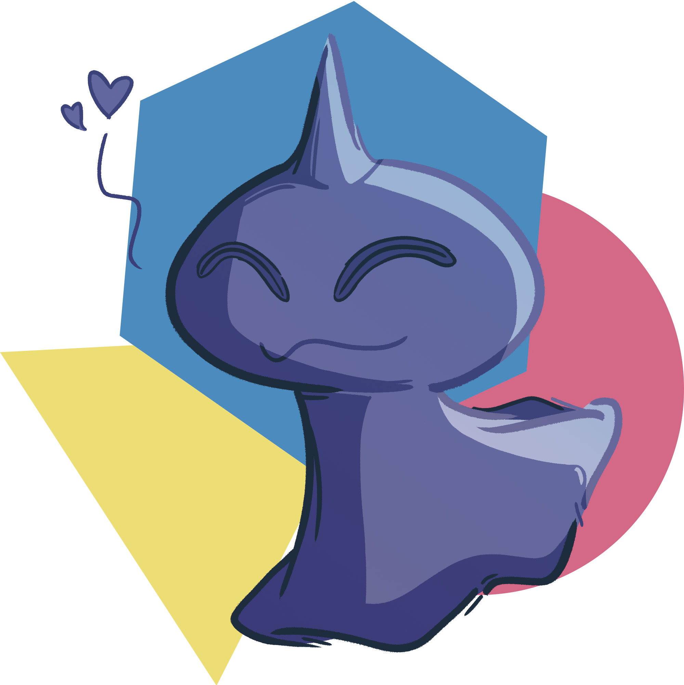

Wrap-up
Congratulations to the 88 teams who engaged in some splendid subterfuge and managed to uncover Giovanni's master plans, especially DIGIMON: DIGITAL MONSTERS for winning the hunt in just over 13 hours! It was a close race for second place, with Swim Shaymin and ⬤ JIGGLYPUFF SEEN FROM ABOVE placing second and third respectively just over half an hour apart!
All in all, 372 teams solved at least one puzzle, while 236 teams finished Round 1. Thank you all for hunting with us!
Before we dive into the rest of the wrapup, we'd like to extend a special shoutout to Aviation Laws for solving every puzzle without using hints and with zero incorrect answers! Also of note are The Greatest Bruce Nanny, LMW, and Gotta Llama Mall, who finished the hunt with zero, one, and two incorrect answers respectively.
As a word of caution, this wrap-up contains many unmarked spoilers for the puzzles in this hunt! If you're still planning on trying out the puzzles, you may want to leave reading this wrap-up for later.
The rest of this wrap-up will cover a bunch of details about the writing process behind this hunt, but feel free to skip to the fun stuff, or check out some of the statistics we compiled!
Story
Teams began the hunt with what appeared to be a relatively straightforward first round, which involved visiting Puzzléstops and solving puzzles there. However, upon solving the Round 1 meta, they discovered that their team leader had assigned them to do some ROCKETEERING—they were actually Team Rocket agents working directly under Team Rocket boss Giovanni, and their goal was to cause unrest among the three Pokémon GO teams!
In Round 2, teams attempted to gain favor with the three GO team leaders, Blanche, Candela, and Spark. Once they had enough favor with the leaders and gained an audience with them, they got to chip in with some (usually incredibly aggressive) words of advice, and ultimately cause a confrontation between the three teams. Returning to Giovanni, it turned out his well-laid nefarious plans merely had the end goal of feeding some human hatred to his pet Shuppet as a treat—all they had done was to FEED AN ODIUM ADDICTION!

Writing the Hunt
Some context
Silph Puzzle Hunt isn't actually the first hunt that we've written together as a writing team. Since 2018, we've written an annual hunt named Smogon Puzzle Hunt, named for the competitive Pokémon community it was originally created for and whose forums it operated out of. We ran the hunt in a Discord server (with puzzles served by a Discord bot), advertised the hunt entirely by word-of-mouth, and kept the hunt deliberately small due to the constraints imposed by the medium.
Over the years, as the writing team gained more experience with puzzles, the target audience generally shifted away from the specific Smogon community to the hunt community at large. This year, we additionally made the move to a more typical website-based format to make running the hunt easier on us. Since it hardly seems fair to use the Smogon name for an event that is only barely associated with them, we rebranded to Silph Puzzle Hunt to maintain the initialism and general Pokémon theming we've had all these years, while signifying the divergence from our original format.
Goals
Based on how last year's hunt went, as well as feedback from last year's participants, we had three main goals for this hunt:
- Make the first round more significant and feel more like a milestone, as opposed to almost like a hassle before solvers could get to the main meat of the hunt.
- Make puzzle difficulty more consistent within the second round.
- Set up the second round to encourage solvers to interact with more of the puzzles.
We believe we did a reasonable job of achieving all three of these goals, as we'll discuss in the following sections.
Theme and structure
The idea of a Pokémon GO theme had been a definite possibility even before planning for this year started: its three-team structure naturally lends itself to a hunt with a three-meta round, there's a reasonable amount of flavor to build off, and it's the Pokémon content that the average non-player is most likely to have heard of.
The thematic structure of the "plot twist" after the first round also tied nicely into our goals for the hunt. Our hope was that completion of the first round metapuzzle would segment the hunt cleanly into two disjoint halves, which would bring some sense of completion to teams who managed to finish the first round but not the entire hunt. To this end, we tried to elevate the contrast between the rounds by changes to the site theme and also set up the site to send out a "milestone" email upon solving the meta.
The structure of our hunt was pretty standard fare as far as modern hunts go. During theme and structure discussions, a number of more complex structural ideas for the hunt were thrown around but unfortunately failed to stick, mostly due to implementation difficulties. The idea that got the furthest was "semi-metas" that would use some Round 1 answers and some Round 2 answers, but we decided that these would end up too shell-heavy and not elegant enough to be worth the extra implementation work. We ended up sticking to the tried-and-tested "three-meta Round 2 with feeder-to-meta matching", which was the same structure the hunt had last year. We channeled most of our creative energy into the puzzles instead, which we think yielded higher marginal benefits for the hunt as a whole.
Unlock structure
One area where we did deviate from last year's structure was in the unlock schedule for Round 2's metapuzzles. In a round with feeder-to-meta matching, we found the linear unlocking schedule for metapuzzles rather artificial since the specific subset of puzzles you solve is never relevant to which meta unlocks and when. It can also place additional restraints on the already difficult problem of puzzle ordering by restricting where puzzles from earlier-unlocking metas can go.
Instead, we opted to tie meta unlocks directly to the solving of associated puzzles. Specifically, we conceptualized the meta structure as each puzzle being a feeder for one GO team (the team whose leader you're giving advice to). Each meta is "tightly" associated with seven puzzles (its feeders) and "loosely" associated with seven other puzzles (the feeders of the other team referenced in the flavor). Then metas unlock when a team has solved either 6/7 of the meta's "tightly" associated puzzles (feeders), or 10/14 of the total set of "tightly" and "loosely" associated puzzles. In practice, this translates to usually getting the three meta unlocks around 13, 14, and 16 solves respectively, and generally via the second condition, though we did notice that some teams were forced to the maximum of 17 solves to unlock their third meta due to their unfortunate selection of solves.
There were a few reasons this structure won out in the end. The decision to associate meta unlocks directly to associated solves was due to our desire to ensure that people had a good amount of feeders before starting work on a puzzle. We felt this was especially important for Spark's meta, which involved many of the most difficult puzzles in the hunt as feeders (Re-actions, ⭐ Alliance, Six Feet Under) but was (we felt) disproportionately easy to solve with a low number of feeders. Secondarily, as solvers we sometimes dislike the feeling of unlocking a meta while being unable to reasonably approach it; this structure was designed both to lower the odds of teams successfully short-circuiting our metas, and to ensure that teams usually had enough data with which to approach a freshly-unlocked meta.
On the other hand, we didn't want information about meta assignment to be leaked by which puzzle's solve unlocked the metapuzzle. The additional condition helps to obfuscate this correlation somewhat since it means that solving a puzzle can unlock a meta it's not a feeder for. In the end, the additional condition seemed almost a bit too strong for unlocking metas, so perhaps a slightly tighter condition (say, 11/14) might have been a better point to tune it to (maybe even creating an asymmetrical structure by setting this tighter condition only for Spark's meta).
One notable feature of this hunt's unlock structure is that it didn't contain automatic unlocks, even within rounds. After some previous hunts this year, we asked around for opinions from some friends' teams who had experienced the automatic unlocks within them. We generally got the impression that the teams who were actually likely to experience the automatic unlocks found them overwhelming and somewhat demotivating. Due to the way we organized our puzzle unlock order (see the next section), unlocks early on in a round will generally lead into more difficult puzzles before the easier ones show up. Not only does this increase the number of open puzzles, spreading out team members' attention and potentially decreasing the chance of any one being solved, it can also demotivate solvers further should they fail to gain traction on a newly opened puzzle.
That said, we received some feedback that a light amount of auto-unlocks would be appreciated, and we recognize that some teams may be more adverse to asking for hints as a means of progress. We're looking into other ways to balance auto-unlocks so that they are actually helpful and not overwhelming, such as having auto-unlocks occur in a different order from regular unlocks, and we hope to be able to develop a system that works for solvers who prefer having some extra avenues to which they can direct their attention.
Puzzle ordering
Puzzle ordering is always a difficult problem in any hunt. Last year, we arranged the puzzles so that difficulty generally increased as the hunt went on, with the idea that teams would slowly "acclimatize" to harder puzzles and be able to make steady progress. Unfortunately, most of the large puzzles ended up unlocking close to or after metas, and so were either solved around or backsolved.
This year, with the intention of giving teams more reason to interact with our puzzles, we decided to rework the way puzzles were ordered in our second round, and be much more deliberate with where we placed certain puzzles in the round. Some things we considered and specifically built the unlock ordering around were:
- Puzzles that don't have any particularly tricky individual steps but which required a lot of work, like Drop The Cube and (to a lesser extent) Minute Details, were put earlier on, to increase the odds that teams still had the energy to attempt the puzzles when they unlocked them. The parallel we drew here was to Teammate Hunt's The Bazaar, a very large (but mostly straightforward) crossword-esque puzzle that we enjoyed working on early on in the hunt while we were less tired.
- The puzzles we considered the hardest in the hunt, Re-actions and RED SUS, went in the middle of the round, long before teams could unlock their respective metas, to give teams time to look at and consider forwardsolving them. We think the rate at which they were attempted was also boosted by them being (at least superficially) cryptics and grid logic puzzles, which are both genres that offer steady progress. At the same time, we hoped the mid-round positioning would also not cause too sharp a difficulty spike compared to Round 1 or early Round 2 puzzles, and that teams would have the middling kind of diameter where the puzzles could be worked around but would at least be attempted solidly.
- We put puzzles with more humor in them, like The Minimeta That Goes Wrong and Straight From The Headlines, near the end of the round, to provide some reprieve for teams who had been soldiering through very intense puzzles. The same line of thought applied to some easier and more familiar puzzle types late in the round, like Overdone and Whole New Ball Game, which we hoped acted as nice palate cleansers.
- We had several puzzles which we considered "visually interesting", like White as a Sheet, Six Feet Under, and ‚≠ê Alliance. We tried to spread these out throughout the round both to break up the standard-looking puzzles in the round (such as ü§ù, Cyclic, and Overdone) and, conversely, to give solvers a break between these puzzles, which were often insight-heavy and demanded ahas upfront in order to get anywhere at all with them.
- Early in the round, we tried to time the increase in unlock diameter to match the appearance of one specific puzzle we thought was much more challenging than its surrounding puzzles. Specifically, for a team solving the Round 1 meta with the minimum possible number of solved puzzles, Drop The Cube unlocks alongside the much more approachable Only Geniuses Can Solve This Puzzle!!. We chose to prioritize this specific instance above our aim of having more teams attempt our harder puzzles since we recognized the round represented a significant step up in difficulty from Round 1 and wanted to cut some slack for less experienced teams at this point.
- We mostly avoided placing puzzles written by the newer authors on the team late in the round, so more teams would get to try them, though the extent to which we could do this was limited by the nature of the puzzles themselves. Honestly, we just thought they did a great job and wanted to show off their work.
It took several sessions of tinkering with orderings to get an arrangement we were mostly happy with, which is what ended up in the hunt in the end. Based on feedback from teams that experienced the entirety of the second round, we're quite happy with the job we did on the ordering.
Puzzle writing and testsolving
One major change from last year's writing process was the addition of several new authors to the writing team, to serve the twofold goals of introducing more variety to the setting style as well as generally increasing the number of man-hours available to work on puzzles. This year we had 9 unique writers, compared to 6 last year, despite 3 of our writers from last year not writing a puzzle this year.
Metapuzzle writing began in December with the three second-round metas. We put out a call for meta pun and mechanic ideas to all available writers early on, from which we received ideas like the usage of Frost's "Fire and Ice", but ultimately Level 51 did the bulk of the legwork on pun generation and meta construction. We tested the metas with group testsolves where testsolvers could simulate arbitrarily unlocking answers, but due to our relatively small team size could only manage three such tests before we finalized the feeder sets.
Solvers may have noticed that all three of our metas were pure metas (that is, they contain no additional information beyond flavortext). We had a few different reasons for this. One motivating factor was to contrast with the previously mentioned and eventually discarded "semi-metas", which were single-leader metas that would unlock before the three that actually made it into the hunt. The idea was that those would have a significant amount of "shell", so they could be constructed more flexibly to allow answer reuse. Another reason was just as a challenge! We've seen "match the answers to the metas" used as a mechanic in several other hunts (the most notable being Puzzle Boat), but never with more than one pure meta. Coincidentally, we ended up with two metas written and noticed that they could both be pure, and so decided to try to do all three.
Feeder puzzle writing ran from the last day of March, when feeder answers were released, all the way to just before the hunt started. We designated one lead editor to be spoiled on every puzzle to avoid excessive overlap between puzzle concepts, and later settled into a fairly informal system for reserving answers, where writers requested answers from this editor given certain restrictions or preferences of the puzzle being written.
Although we initially attempted to keep the feeder list private from most writers so they could better testsolve other authors' puzzles, the quantity-wise demands on puzzle writing ultimately led to us sending a list of unreserved answers to some writers at several points so they could develop ideas based on answers we still needed puzzles for. We hope to be able to find a good balance between the two options to maintain high-fidelity testsolves while allowing authors to take inspiration from puzzle answers.
One new thing we tried this year, inspired by Teammate Hunt's weekly meetings, was organizing weekly group testsolves at regular times on the weekends, especially later on in the writing process when the testsolving queue really started to fill up. While solves generally went smoother than individual testsolves, it was a challenge to find times when many testsolvers were available due to the international (and mostly working-age) nature of our team. Additionally, solves sometimes failed to end within a single session, making it difficult to coordinate gathering exact sets of solvers who had already been spoiled on some given puzzle for another testsolve session together. In the future, we hope that initiating and planning these weekly sessions further in advance can help to ease these scheduling conflicts.
Hunt-writing timeline
This is a pretty sparse timeline of the hunt, based just on facts that we could check.
- August 2020: Pokémon GO theme idea initially floated.
- October 2020: We abandon our funky meta structure ideas and decide to settle for the typical three-meta second round.
- December 2020: Work on metapuzzles begins!
- February 2021: beta secretly PMs Level 51 "as a heads up, there will probably be a fairly major puzzlehunt scheduled to start 7/23 or so". It is pretty obvious what this is. None of the editors want to run Silph immediately after GPH, so we tentatively agree to move the hunt to a later spot in the year.
- Early March 2021: GPH is announced, and Silph is officially relocated to September after discussion with the rest of the team.
- Late March 2021: Metas are tested, feeders are released. Puzzlord is set up.
- June 2021: QoDE gets scheduled for a week in the calendar where its tail end overlaps with Silph's opening weekend. After some discussions with the QoDE team and attempts to find alternatives, Silph is (reluctantly) moved to December. This turns out to be incredibly good for stress levels in general.
- 30 Oct 2021: About half the puzzles have had a testsolvable draft or beyond.
- 1 Dec 2021: All answers are claimed and have an idea assigned to them.
- 3 Dec 2021: Metameta is written.
- Early hours of 4 Dec 2021: All puzzles have been testsolved.
- About 2 hours before the hunt starts: All the puzzles have been postprodded.
- About 30 minutes before the hunt starts: We wait for the hunt to start, under the (notably false) impression that we've located and dealt with a large number of the site's bugs.
Reflections on the hunt
Hunt difficulty and length
This hunt was—as we expected—more difficult than our previous hunts, both in ways we intended and ways we did not. We felt the first round lived up to our goal of being a more substantial challenge for teams to solve through, rather than just being a chore to get through before the "real hunt" begins. We're also happy with our decision to cap it off with a rather more involved meta than the more simplistic single-aha metas we ended Round 1 with in previous hunts.
Round 2 was also, similarly, more difficult than our previous hunts, though we may have underestimated just how much more difficult it was. Having more puzzle writers meant that the puzzles that made it into our hunt, on balance, had significantly more intricate structures than in previous years since they were afforded more attention during the writing process. Thus, though the hardest puzzles in this hunt were perhaps not as hard as some previous puzzles we've published, the more consistent puzzle difficulty meant that the difficulty of the "path of least resistance" was increased significantly. Additionally, less backsolveable metapuzzles and an overall tighter meta unlock schedule meant that teams generally had to solve more feeder puzzles to unlock metas, which definitely increased the load on solvers more than anticipated.
Although we indeed hit our initial goals of better within-round consistency and more solver interaction with puzzles, we acknowledge that it came at a tradeoff of a notably harder hunt overall. Based on the feedback we received this year, many solvers felt that the hunt felt too difficult and ran longer than expected. This led us to conclude that the expected difficulty of the hunt was perhaps not communicated effectively, or that solver expectations regarding difficulty and length were not managed sufficiently well. While our prediction that the hunt's difficulty would fall between that of Huntinality and Teammate Hunt, and that top teams would finish within the weekend, was correct, it wasn't a very helpful guideline for solvers outside of those top teams. We believe that there's nothing inherently wrong with a difficult hunt—and that indeed it's more natural to regulate solver expectations rather than push back on our own ideas—but for future hunts, we hope to be able to make more useful estimations of length so solvers have a clearer idea of what to expect.
We also received feedback noting that the puzzles this year contained much less flavortext than in previous years. We think the general perception of flavortext amongst our writing team has shifted from seeing flavortext as a generic part of a puzzle to seeing it as an artificial addition to be made only when an aha is sufficiently obtuse or not likely to be seen otherwise. It's probably a good idea to trade off some elegance for a better solver experience, especially in the introductory round on puzzles like Color-Coded or Continuity. However, we're not convinced flavortext would have helped much for some of the harder Round 2 puzzles: there, suggestions about some of the harder steps of the puzzle are better understood from the way they're baked into the puzzle's structure itself—such as the extraction steps on Drop The Cube or RED SUS—rather than delivered artificially through flavortext.
Finally, we noticed that although the first round was enjoyable for relatively new solvers and the second round was appropriate for highly experienced solvers, many teams in the middle seemed frustrated by the jump in difficulty going into the second round. Reflecting on this, we believe we have some ideas about how to better support intermediate-strength teams, and hope to find good implementations of them in future hunts we write.
Errata
Unfortunately, this hunt contained many more errata than the average hunt of its size, and definitely far more errata than we would have liked; we'd like to apologize to teams whose solving experience was adversely affected by them. Our small team size meant that many testsolves occurred rather late into the writing process, leaving little to no time for fact-checking. In combination with general manpower constraints—the vast majority of the puzzles were post-prodded and uploaded by two people—it was easy for mistakes to slip into the process despite our best efforts. We're working on better organizational processes and stricter timelines for future hunts and hope that these will be a big step towards solving this problem.
Future plans
For some years now, Silph / SPH has been a much larger hunt than what its organizing team is realistically scaled to handle. While we have managed to pull off the hunts we've planned so far, and the hunts have met with generally positive responses from the community, we think it may be in the best interests of the continued sustainability of the hunt to scale its operations back down to a more manageable size.
Silph 2022 is, as of now, very much hypothetical. The bulk of our writing force is pretty tired after the crunch time leading up to the hunt, and due to other commitments, we feel quite comfortable in saying that Silph 2022, if it does occur, will not return to the July time slot that Smogon Puzzle Hunt occupied before this year.
Fun stuff
Thank you to all the teams who sent us questions, stories, and more through the feedback form and over the course of the hunt! It's always fun for us to hear about what it's like on the other side of our puzzles. We've compiled some stories we received below, as well as our responses to some questions you asked us and a collation of some answer submissions we enjoyed!
Stories we received
Harmony
Six Tsareena: Our resident chessxpert was totally baffled by the chess puzzle: "none of these are gambits! The queen isn't even involved in some of them. They can't just be chess puzzles; they all look like they're from real games. But they can't be famous games, I don't recognize any of them." Eventually he gave up, and we spent a few hours solving the marathon-length rebus puzzle. When he got online the next morning, the very first thing he said was: "I am an idiot, they're all games from The Queen's Gambit." We all had a great big guffaw, and then solved the puzzle quite quickly.
Getting Going
The Choicest Band: My teammate and I both independently, simultaneously, stopped solving meta-1 to learn the rules of Go. When we returned, we confessed what we spent the last hour doing, that we had nothing to contribute to the puzzle, and that honestly, we still didn't really know how to play Go.
Minute Details
We are going on a puzzle hunt!: After the hunt, in our household any answer to "what time is it?" includes " ... Perfect time to do some word searches!" :)
Drop The Cube
17th Generation Is All Ghost/Blood Pok√©mon: We tried our hardest to skip the intended solve path and exclusively use Nutrimatic—with some success!
Also, between all of the people working on the puzzle, the only physical Rubik's cube that we found was 12-sided.
1 Billion Puzzles vs 1 of Every Pokemon: I actually own a Rubik's Cube made out of the same material that whiteboards are made of, and some dry erase markers, and I was so excited to write the letters on my cube and turn it IRL to do all the extractions. The first time I did it, I learned there's no way to turn the cube without wiping away 70% of the dry erase markings, and doing it from sheets ended up being faster :(
Indirect Anagrams
smuon sneutrino: At one point I was working on Indirect Anagrams in a shared office full of grad students who knew nothing about puzzles. Two separate people asked "why are you looking at a picture of the alphabet?", one person asked "oh is this one of those puzzles you do?", and another person asked me to help him with a Sudoku puzzle on his phone after hearing me say "puzzle".
Composition
17th Generation Is All Ghost/Blood Pokémon: We came up with a lot of theories about why certain elements appeared to be missing; our favourite was that the woman in American Gothic had been turned into 24 soup cans by a passing wizard.
Candela's Mystic Correspondence
Arithmancers Catching 'Em All loved sentence diagrams so much, they made one for the entirety of Fire and Ice!
Spark's Stolen Valor
üöÄüöÄüöÄ: I work as a designer on Valorant, and so when we hit the ü§ù puzzle (League/DoTA), I mentioned "damn it'd be the DREAM to see a Valorant puzzle one day." A few puzzles later, Spark's Stolen Valor came along! And FIREBIRDXL was a particular treat for me (I designed Phoenix). Thanks for making that meta - it made my day.
A Turn For The Worse
Shady Gentlemen: We "solved" the metameta without using any of the feeders by using code to run the given Caesar shifts on a list of 8- and 9-letter words, with the best results being FEEDANO and ICTION. Entering "feed an odium addiction" into the answer checker after seeing these results because "eh, why not, might as well try it" and then getting congratulated on finishing the hunt felt kind of weird.
Statistics
While the hunt ran, we collected some statistics on teams' progress through the hunt. You can check some of them out here:
- The Big Board we used to monitor teams' global progress
- A general stats page with information on puzzle solves, hints used, and backsolves
- A chart of solves over time for the first 30 teams to finish the hunt
- Progress charts for the 88 teams who finished the hunt
Team statistics
We collected some statistics on the general performance of each of the three allegiances in this hunt. Which team did the best? Err, that's up to you to decide, we think.
| Alignment | Instinct | Mystic | Valor | Total |
|---|---|---|---|---|
| Total teams | 130 | 223 | 90 | 443 |
| Solved at least one puzzle | 111 | 189 | 72 | 372 |
| Solved the introductory meta | 70 | 117 | 49 | 236 |
| Solved at least one R2 meta | 32 | 42 | 24 | 98 |
| Finishers | 28 | 36 | 24 | 88 |
| Guesses | 5195 (avg 40.0) | 8141 (avg 36.5) | 3907 (avg 43.4) | 17243 (avg 38.9) |
| Solves | 1953 (avg 15.0) | 3069 (avg 13.8) | 1353 (avg 15.0) | 6375 (avg 14.4) |
| Correct % | 37.6% | 37.7% | 34.6% | 37.0% |
Speed
The fastest solves on each of the puzzles in this hunt were shared among 25 unique teams. The fastest solve registered anywhere in the hunt was aabbcc's solve on Spark's Stolen Valor in 4 minutes and 43 seconds, while the fastest solve on a non-meta puzzle was pockET MAsters' solve on ü§ù in 5 minutes and 26 seconds.
| Puzzle | Fastest team | Solve time |
|---|---|---|
| Opening Ceremony | DIGIMON: DIGITAL MONSTERS | 0:06:38 |
| Kids These Days | Just For The Magikarp | 0:31:38 |
| Quick Fix | Swim Shaymin | 0:14:38 |
| Now I Know My üêùüêùüêùs | Briny Shark | 0:07:19 |
| If You Give... | ⬤ JIGGLYPUFF SEEN FROM ABOVE | 0:06:09 |
| Harmony | KaBaL | 0:24:52 |
| Color-Coded | Speculative Execution | 0:21:11 |
| Connections | Mobius Strippers | 0:14:16 |
| Natural Order | Swim Shaymin | 0:19:24 |
| Continuity | Squirtle Curlers | 0:14:11 |
| Chimera | Just For The Magikarp | 0:21:14 |
| Medal Ceremony | Swim Shaymin | 0:33:17 |
| Getting Going | DIGIMON: DIGITAL MONSTERS | 0:18:07 |
| I See! | pockET MAsters | 0:21:19 |
| White as a Sheet | pockET MAsters | 0:48:08 |
| Δ | Swim Shaymin | 0:22:18 |
| Minute Details | Team Fletchling | 1:09:37 |
| Indirect Anagrams | Middle Class | 0:27:28 |
| Drop The Cube | ScytherteamA | 2:04:31 |
| Only Geniuses Can Solve This Puzzle!! | 1 Billion Puzzles vs 1 of Every Pokemon | 0:19:32 |
| Six Feet Under | 17th Generation Is All Ghost/Blood Pokémon | 1:24:08 |
| ü§ù | pockET MAsters | 0:05:26 |
| Cyclic | Just For The Magikarp | 0:30:03 |
| RED SUS | aabbcc | 3:45:09 |
| Audit Instance | Team Galactic | 0:28:49 |
| Re-actions | [pi] | 2:34:02 |
| Composition | ✈ | 0:30:58 |
| A Lot of Research into Things That Have Very Little Meaning | üê¢üê¢üê¢3 DREDNAW 0 ZAPDOS | 1:09:57 |
| Card Sharks | DIGIMON: DIGITAL MONSTERS | 0:43:16 |
| The Minimeta That Goes Wrong | [pi] | 1:10:15 |
| ⭐ Alliance | The Carnivine Schism | 1:22:21 |
| Overdone | Arithmancers Battling Rocket Affiliates | 0:26:24 |
| Whole New Ball Game | Team Galactic | 0:37:24 |
| Straight From The Headlines | Speculative Execution | 0:58:33 |
| Candela's Mystic Correspondence | \ KAKTOVIK NUMERAL ARCTIC UNO | 0:11:52 |
| Blanche's Social Instinct | Jigglyplugh | 0:13:40 |
| Spark's Stolen Valor | aabbcc | 0:04:43 |
| A Turn For the Worse | Needlessly Eating Shuckles | 0:37:14 |
Hints
During this hunt, we responded to a total of 2338 requests, including follow-up hint requests. We collectively wrote 101,820 words' worth of hint responses, which is slightly longer than To Kill a Mockingbird and slightly shorter than Gulliver's Travels.
Our median hint response time was a pretty zippy 2 minutes and 33 seconds, and we managed to respond to 92.5% of hints within 10 minutes. We're quite pleased with this response time, especially given that 1609 requests, or 68.8% of the total number of requests, were handled by two people.
Credits
Project lead: Level 51
Tech: rf215, Level 51, betaveros
Puzzle editors: Level 51, Deusovi
Puzzle authors: betaveros, chaotic_iak, Deusovi, kt3, Level 51, lovemathboy, lydian, moo, mstang
Additional testsolvers: ALT, Dogfish44, Mistrals, talkingtree
Art: lydian, mysterious uncredited artist